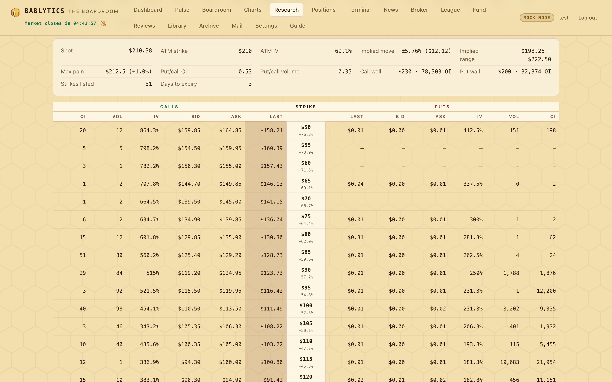
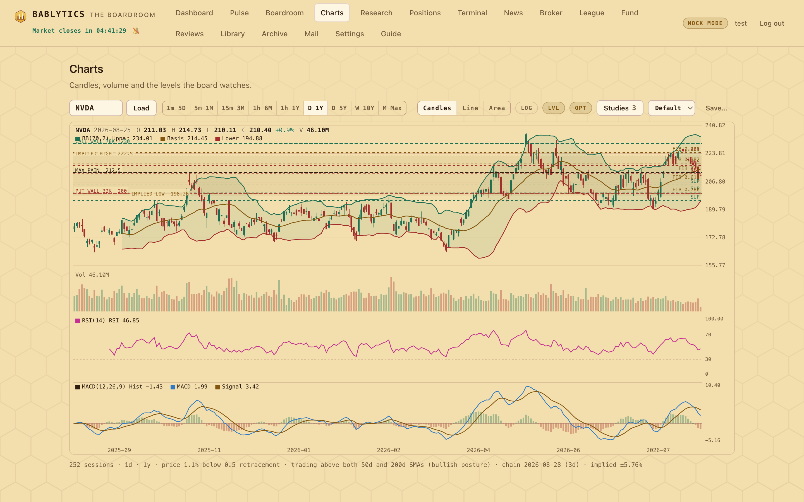
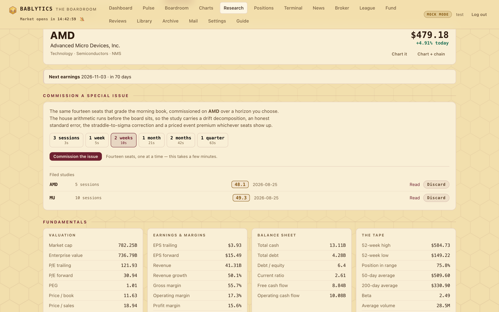

Desk · any ticker, on demand
The Research Desk
Name any ticker and COMMISSION a special issue — the same sixteen seats, on a horizon you choose. Plus what a desk wants in front of it before an opinion exists: the fundamentals, and the whole listed options chain — every expiry, every strike, both sides, including the strikes that have never traded. The chain comes with its own summary (the implied move, max pain, the put/call ratios, where the open interest sits — and, since round 47, where the gamma sits: the magnets) and any of it can be thrown onto the chart as price levels. Read-only; nothing here places an order.
Every other surface in this app looks at names the board already chose. The morning book hands you twenty leads; the Spotlight writes up the ones above sixty; the Fund buys them. All of it flows one way, and none of it answers the question you actually ask most often: what about this one?
The Research Desk is that direction. You name a ticker — any ticker, whether the board has ever looked at it or not — and you get the two things a desk wants in front of it before an opinion exists: what the company is and what it earns, and the whole listed options chain. Not the one contract a lead happened to pick. Every expiry, every strike, both sides.
![The Research Desk with NVDA loaded: the ticker box and a recent-tickers chip row at the top, then a header card with the ticker, company name, sector and the live price with the day's move and two buttons reading Chart it and Chart plus chain, then an amber earnings strip reading next earnings tomorrow with the warning that every premium below carries this print, then the fundamentals as six grouped cards — valuation, earnings and margins, balance sheet, the tape, ownership and float, and what the street says](assets/screens/research-desk.png)
The fundamentals#
Six groups, chosen because they are the six questions a desk asks in order. Nothing is computed by this app except where noted — these are the filings as the feed reports them.
- Valuation
- Market cap, enterprise value, trailing and forward P/E, PEG, price/book, price/sales.
- Earnings & margins
- Trailing and forward EPS, revenue and its growth, gross / operating / profit margin, return on equity.
- Balance sheet
- Cash, debt, debt-to-equity, current ratio, free and operating cash flow.
- The tape
- The 52-week high and low, the 50- and 200-day averages, beta, average volume — plus position in range, which is this app's arithmetic: where today's price sits between the 52-week low and high, as a percentage.
- Ownership & float
- Shares outstanding, float, insider and institutional holdings, short ratio, short percent of float, dividend yield and payout ratio.
- What the street says
- The consensus rating, how many analysts, the high / mean / low targets — and upside to mean, again this app's arithmetic rather than the feed's.
0.741 means 74.1%) but reports dividendYield already in percent (0.48 means 0.48%, not 48%) — and which convention it uses has changed between library versions. Rather than trust a unit that moves, the desk computes the yield as annual rate ÷ price, which is checkable arithmetic, and falls back to the feed's own figure only when the rate is missing.The earnings strip#
The next earnings date sits directly under the header, before the fundamentals, and turns amber inside seven days with the line "every premium below carries this print". That placement is deliberate: a chain read the day before a print is a chain whose implied volatility is paying for an event, and reading the strikes without knowing that is how a desk talks itself into selling cheap-looking premium that is not cheap.
The full options chain#

Pick an expiry from the row of buttons — each shows its date and its days to expiry, because a strike means nothing without the date it dies on — and the chain for that expiry loads underneath. Up to 24 expiries are offered.
What the chain says, before any single contract#
Above the table is the summary. These are the numbers a desk reads first, and several are computed here rather than supplied:
- Implied move
- The at-the-money straddle priced off marks, as a dollar figure and as a percentage of spot, with the implied high and low it defines. This is the chain's own forecast for this expiry and it is the single most useful number on the page.
- Max pain
- The strike at which the most option value expires worthless, computed across every strike's open interest — shown with its distance from spot.
- ATM IV
- The mean of the at-the-money call and put implied volatilities — of the legs that actually have a quote. The feed marks a strike it has no two-sided market for with an implied volatility of
0.00001, which is a no-quote marker and not a number; until round 41 that marker was averaged in as though it were an observation, which is why this cell once read 0.4% for NVIDIA. Legs below a 2% floor are now dropped, and where neither leg has a real quote the cell reads —. A dash here is a finding: it means this expiry has no at-the-money market, and any number in its place would be invented. - Put/call ratios
- Separately for open interest and for volume — positioning against activity, which frequently disagree.
- The walls
- The call strike and the put strike carrying the heaviest open interest on this expiry, with the size.
How many strikes to show#
A liquid name lists eighty or more strikes on a single expiry and almost all of them are noise. The Strikes shown control offers 10 · 20 · 40 · 60 · All, and the count is centred on the money — "20" means the ten nearest strikes above and the ten nearest below, not the first twenty in the list. The default is 20 and your choice is remembered across tickers and sessions.
The table#
Calls on the left, puts on the right, the strike down the middle — the way a chain is actually read. Each side shows open interest, volume, implied volatility, bid, ask and last. The strike cell carries its distance from spot underneath. In-the-money cells are shaded and the row on the money is outlined.
Gamma on the chain#
Since round 47 the chain carries one Greek, and it is one the desk computes itself. Gamma is how fast an option's delta changes as the underlying moves — the curvature of the contract's price. The feed serves implied volatility and no Greeks, so bablytics/greeks.py computes Black-Scholes gamma per contract from the feed's own IV, spot, the strike and the time to expiry. A call and a put at the same strike and expiry have the same gamma, so a strike's gamma is one number; what differs between the two sides is how much open interest sits on each.
That is why the number the desk actually shows is gamma weighted by open interest. Whoever is on the other side of a strike's open interest has to hedge it, and hedging gamma means trading the underlying against its own moves. Where a great deal of gamma is concentrated and the hedgers are long it, they buy the dips and sell the rips as price nears the strike, and price is pinned to it — the strike is a magnet. Where the net sign runs the other way the same hedgers have to chase, buying as it rises and selling as it falls, and the move is accelerated rather than damped. The owner's term for reading a chain this way is gamma mining: find the strikes where the most gamma sits, because that is where the hedging flow is, and the hedging flow is what pins or pushes.
Gamma exposure, per strike#
For every strike the chain computes gamma exposure — gamma × open interest × 100 × spot × 1% of spot — in dollars per 1% move of the underlying: how much stock the hedgers of that strike would have to trade if the name moved one percent. It is signed calls positive, puts negative, the usual dealer convention, and every row of the table carries it: gamma, gex_call, gex_put, gex_net, gex_abs and gex_share. Above the table the gamma block summarises the expiry:
- The magnets
- The five strikes with the largest absolute exposure, each with its signed and its absolute figure and its share of the whole expiry's absolute exposure. The largest is where the chain says the hedging flow is heaviest.
- The bar
- Every row's
gex_shareis its absolute exposure as a fraction of the biggest strike's, so the table draws a bar behind the cell: the biggest magnet fills its cell and every other strike is read against it. The bar is a share of the expiry, never a dollar scale, so a thin chain and a heavy one are read the same way. - The flip
- Walking the strikes upward and accumulating net exposure, the strike where the running total changes sign. Which side is damped depends on which way the running total turns: when it turns positive above the flip, the hedgers overhead are net long gamma and moves there are damped while moves below are amplified; when it turns negative above, the reading reverses. The chain reports the direction beside the strike rather than assuming one. It reads None when the sign never changes — a finding about the chain, not a missing value.
- The totals
net_totalandabs_total, the signed and the unsigned sum across every strike. When they differ by an order of magnitude the calls and puts are cancelling, and the signed reading is fragile.
assumptions lists them in words, beside the rate used, the units and the count of contracts skipped — so the number never arrives without the terms it was computed on.A live read: NVDA, the 2026-09-14 expiry#
Read on 2026-09-13, one session before that expiry: 30 of 30 strikes priced. The magnets were 220 at $55M — 63% of the expiry's absolute exposure on one strike — then 215 at $19M and 225 at $9M. Max pain was 220. The at-the-money strike was 220. Three computations that share no arithmetic — where the most option value expires worthless, where spot sits, and where the most hedging flow is — agreed on the same strike, which is what a pinned name looks like on a chain. The signed reading was nearly flat: net_total −$1M against $55M absolute at 220 alone, so the calls and puts at the magnet were cancelling and the running total never changed sign — flip: None. That is exactly the case the absolute figure exists for. The magnet is unmistakable; whether it damps or accelerates depends on who is hedging which side, and the chain reports the exposure without pretending to know.
What the number assumes#
Black-Scholes, with its assumptions named rather than hidden: European exercise (listed equity options are American, and the difference is not corrected for), no dividends, a flat risk-free rate — config.RISK_FREE_RATE, 4%, which gamma is barely sensitive to and which is a setting so the assumption is visible rather than buried — and the feed's implied volatility as served. That last one matters most: where the feed prints a nonsense IV on a deep in-the-money strike, the gamma there is computed from the nonsense, and a chain the scanner's ladder guard has flagged is still a surface. A contract with no usable implied volatility gets no gamma rather than an invented one, and the block counts what it skipped. Where the two sides of a strike disagree on IV the first good one is kept — the spread is the feed's, and the difference in gamma is second-order.
ok: false with the note "no gamma: under one day to expiry — gamma is not defined at the bell", and the rows carry no exposure fields at all rather than a figure that means nothing. On every other day the magnets say where the hedging flow is heaviest if the open interest is hedged the conventional way; they do not say the stock will go there, stay there or leave. Like everything on this page it is research output, with no execution path.The chain, on the chart#

A chain is a table of prices, and a chart is a picture of prices, so the two belong on the same surface. The OPT toggle in the Charts toolbar draws the chain as horizontal levels:
- the implied-move band — the straddle's upper and lower edge, with the space between them shaded;
- max pain;
- the call wall and the put wall, each labelled with its open interest.
The note strip under the chart says which expiry is drawn and what it implies, because a level without its expiry is not a level. Switching the symbol drops the overlay before the redraw, so a stale set of strikes can never sit over a different stock. Unlike the LVL overlay, OPT draws on every interval — a strike is a strike at any zoom.
The Chart + chain button on the Research Desk does both steps at once: it opens the Charts tab on that ticker with the overlay already armed, so the chain is drawn on arrival rather than a click later.
Reaching the far columns with a mouse#
The chain table is the widest table in this app, and it has to be — thirteen columns is what both sides of a strike costs. On a narrow window the put side sits past the right edge, and a wheel mouse has only one axis: without a trackpad, those columns used to be unreachable.
So the app translates a vertical wheel into horizontal travel whenever the pointer is over a box that scrolls sideways, and hands the wheel straight back to the page at either end, so scrolling past the table keeps scrolling the page. The chain table is deliberately not vertically scrollable for the same reason: a box that scrolls both ways keeps the wheel's normal vertical meaning, which would put the far columns back out of reach. The page scrolls through the strikes; the table scrolls sideways; the column headers stay stuck to the top of the window either way.
Statistical signals for the name#
Since round 45 the desk also shows the ticker's statistical signals — the owner's twelve-equation residual-momentum framework, computed for this name inside a universe; since round 46 that universe is the whole market by default, every S&P 500 constituent plus SPY, QQQ, DIA, ^DJI and ^VIX. The panel prints the row: what the name is (stock, etf or index), its daily volatility over the sixty-session window, its most recent z-score against its own window and against the group, its ten-session expected return in units of that volatility, the residual once the window's common patterns are taken out, and the signed weight, rank and side that follow — the rank now out of five hundred and some, not twenty. Under it, the universe the row was computed in, its size and its count by kind, how much of the group's momentum the factors explained against what noise alone would have explained, the five index rows so the market's own residual momentum is beside the name's, and the combined signal with its definition.
index and the panel shows them as reads on the market, never as anything to express. Like everything else on this page it is a read: research output, with no execution path.The Regime decoder — a hidden Markov model, drawn as a chain#
Since round 51 every lookup also decodes the name. Under the statistical signals sits the Regime decoder: a three-state hidden Markov model fitted to that ticker's own two years of daily returns — the same instrument The Decoder reads at the board, shown here in full instead of as a row of numbers. It runs by itself when you look a ticker up (one name takes several seconds — every Baum-Welch start is run to convergence), and its own box decodes any other symbol without leaving the page.
A hidden Markov model is a picture, so the desk draws it. Read it top to bottom:
- The verdict
- One line, colour-coded, and it comes first on purpose. Strong, Moderate, In-sample only or No usable regime structure. A three-state model finds “regimes” in coin flips, so the desk re-trains on the first 70% of the tape, freezes the model, and scores it on the 30% it never saw. Most names, most days, read no usable regime structure, and then everything below is a description of the tape, not a forecast. Even when it clears, this dial is blind to direction: it certifies the turbulence structure — how violent the name is and how sticky that is — and about one tape in four clears it on volatility clustering alone. Whether the odds may be read as a call is a separate line in the honesty panel.
- The chain
- Three circles, one per hidden state: lowest drift bottom-left, middle on top, highest bottom-right. A circle's size is how much of the long run that state holds. Each arrow is the daily probability of moving from one state to another, its weight following the number and its colour the state it leaves; the loop on each circle is the chance of staying put, which is what makes a regime sticky. The state today's belief favours wears a ring marked NOW — dashed when the best whole path and today's most probable state disagree, which means the model does not know where the name is.
- Today's belief & tomorrow's odds
- The forward algorithm's probability for each state today, then tomorrow's down / flat / up odds read straight off the chain (today's belief × the transitions × what each state prints). The line that matters is what the regime adds: the up-minus-down edge beyond the mix this name actually printed over the two years. Turbulence now compares how violent the name is against that same window. Surprise scores the last ten sessions with the model frozen at the 70% mark, which never saw them, and reads the result against windows that model itself generates ending in the same state — so a name that is merely violent does not trip it. It is read in both tails: the low one is the tape printing what this model's version of the state rarely prints; the high one is a window far more one-note than the model ever makes. Ten straight big-down days lands in the high tail, because a run of one symbol is the likeliest thing a turbulent state can print.
- What each regime prints
- The emission matrix as bars: how often a day in that state is a big down, down, flat, up or big up day (each cut by the name's own volatility), with the stay probability, the expected duration and the share of the two years spent there. This is where you see what a label like “calm up” or “turbulent down” actually means — the labels are the desk's gloss on these bars, not something the model asserted.
- The decoded tape
- A price index rebuilt from the returns, on a log scale, with the regime Viterbi decodes for each stretch painted behind it; hover a band for its dates. The dashed line marks where the walk-forward test split the tape.
- The two honesty panels
- Left: the walk-forward result — the direction hit rate beside a naive rule with its standard error, the held-out likelihood gain with its t (the regime dial needs t ≥ 2), and the direction test: whether those calls beat the naive rule by two paired standard errors. Unless that line says cleared, read the odds above as description. Right: BIC for this model against two models with no hidden regimes — one urn, and a visible chain in which yesterday's symbol is all the state there is — with the winner marked, whether Baum-Welch converged, and whether its six starting points agreed. They usually do not: on the first live sheet they agreed on 10 of 43 names, because several quite different three-state models often explain a tape equally well. When they disagree the decode is fragile and the desk says so.
The endpoints#
GET /api/research/<ticker>- The fundamentals plus the list of listed expiries.
GET /api/research/<ticker>/expiries- Just the expiries, each with its days-to-expiry.
GET /api/research/<ticker>/chain?expiry=<date>- The full chain for one expiry — every strike, both sides — plus the summary block and, since round 47, the
gammablock, with the exposure fields on every row. Omittingexpirygives the nearest. GET /api/research/<ticker>/overlay?expiry=<date>- The chain reduced to the handful of price levels the chart draws.
GET /api/signals/statistical/<ticker>?universe=market|book|core|both- The name's statistical-signals row, computed inside the chosen house universe (the ticker added if absent), with the universe, the factors block and the combined signal returned alongside;
M,dandKare optional. The whole-universe form isGET /api/signals/statistical?tickers=…. Page.
The Regime decoder adds a sixth: GET /api/signals/hmm/<ticker> returns the whole read — states, transitions, emissions, today's belief, tomorrow's odds, the surprise score, BIC against both nulls, the walk-forward test and the evidence dial — and ?detail=1 adds the decoded tape, session by session.
All of them are authenticated, all of them are reads. Chains are cached for two minutes and fundamentals for fifteen, because a chain moves all session and a balance sheet does not; a statistical-signals result is cached per universe, per parameter set, per day, because a sixty-session window does not move until the next close; a failed lookup is remembered for 45 seconds so a bad ticker is not hammered at the feed. The ticker itself is validated before it reaches the feed — short, alphanumeric, and the punctuation that really appears in symbols (BRK-B, BF.B, ^VIX, CL=F).
What it will not tell you#
- The marks are last-traded, not live quotes. Bid and ask come from the feed's snapshot; on an illiquid strike they can be stale or absent, and the mid is only a mid where both sides exist.
- The only Greek shown is one this app computes, and it says so. The feed supplies implied volatility and no Greeks. Since round 47 the chain carries gamma and gamma exposure, modelled from that IV under assumptions the block lists; delta, theta and vega are still not shown, and nothing modelled is ever presented as the chain's own quote.
- Nothing here is graded. The board does not sit on a research lookup. If you want an opinion on a name, it has to come through a run.
- No such ticker is a normal answer, and so is this name has no listed options — both are said plainly rather than rendered as an error.
Commission a special issue#
A Spotlight is triggered by the board: a lead clears sixty and the system writes it up. A special issue is the other direction. You name the ticker and the horizon, and the same sixteen seats write a study on it — whether or not the board has ever looked at that name.

- The horizon is yours
- Three sessions, a week, two weeks, a month, two months or a quarter — and the API accepts any integer from 2 to 120. The horizon is not decoration: it selects which expiry the chain analysis anchors on, which forward-return distribution is measured, and how the realized volatility is matched.
- It runs in the background
- Fourteen seats, one at a time, so it takes a few minutes. The panel shows live progress — which seat is being asked, or which expiry is being pulled — and one study runs at a time.
- Studies accumulate
- Issues append rather than replace. The same ticker over the same horizon on a different day is a different study, and so is a re-run after the tape moves. Every one keeps its own PDF, named with its row id so nothing can overwrite anything.
The house does the arithmetic before the board sits#
This is the part that makes an issue worth reading, and it is the direct product of the first one ever written. That study — Micron over ten sessions — was only useful after its own framing had been audited, and every error the audit found was mechanical. Mechanical errors belong in code, not in a prompt where a model may or may not notice them. So they are computed on every issue now, before any seat sees anything:
- Drift decomposition
- A "base rate" measured over a period in which the stock tripled is the trend restated. The packet reports how much of a forward-return median is simply the sample path's own drift, and what is left once it is removed. On the first AMD study it found that 118% of the five-session median was drift — a residual of −0.18%.
- Honest standard error
- N overlapping k-session windows contain roughly N/k independent observations. Quoting the naive standard error overstates precision by √k. Both are reported, with the multiple stated.
- A straddle is not a sigma
- A chain's "implied move" is the at-the-money straddle price, which is about 0.798 standard deviations. Comparing it directly against a return standard deviation is a category error that understates the market's own volatility estimate by a fifth. The packet converts it.
- Realized vol at the traded horizon
- A held-to-expiry position is paid on terminal dispersion. Daily volatility scaled by √t is the wrong comparator when the series mean-reverts, and where the k-session dispersion sits below it, that is mean reversion at exactly the horizon being traded.
- Beta and R², not correlation alone
- A low correlation with a beta near one means a large expected co-move with a large residual — an argument for owning optionality around a name's events, not for dismissing them. Correlation alone hides that, and on the first issue it led the desk to the wrong conclusion twice.
- The priced event premium
- When two listed expiries straddle a dated event, the difference in their implied variance prices the event itself: J² = (σpost² − σpre²) × tpost. The share of the horizon's total variance it represents says whether a post-event volatility crush is worth fearing — on the Micron study it was 9.1%, so the "crush risk" one seat named as the trade's principal danger was worth under three volatility points.
- Does the expiry even cover the window?
- Stated explicitly, because it frequently does not. A ten-day expiry covers about seven trading sessions, and a study that quietly analyses seven while claiming ten is wrong by 30%.
In mock mode#
With no API key the sixteen seats answer deterministically and the document says so on its own front page. Everything in the arithmetic sections is still real — real chains, real levels, real distributions, real computation — because none of it is a model call. A mock issue is half a study, and it is honest about which half.
The endpoints#
GET /api/issues- The archive, newest first.
GET /api/issues/progress- What the writer is doing right now — the stage and the seat.
POST /api/issues/generate{ticker, horizon}. Returns immediately; one study runs at a time and a second request is refused rather than queued.GET /api/issues/<id>- The whole study — packet, every seat, the verdict.
GET /api/issues/<id>/pdf- The rendered PDF, inline. A missing file is re-rendered from the stored payload rather than 404'd, because the study itself was never lost.